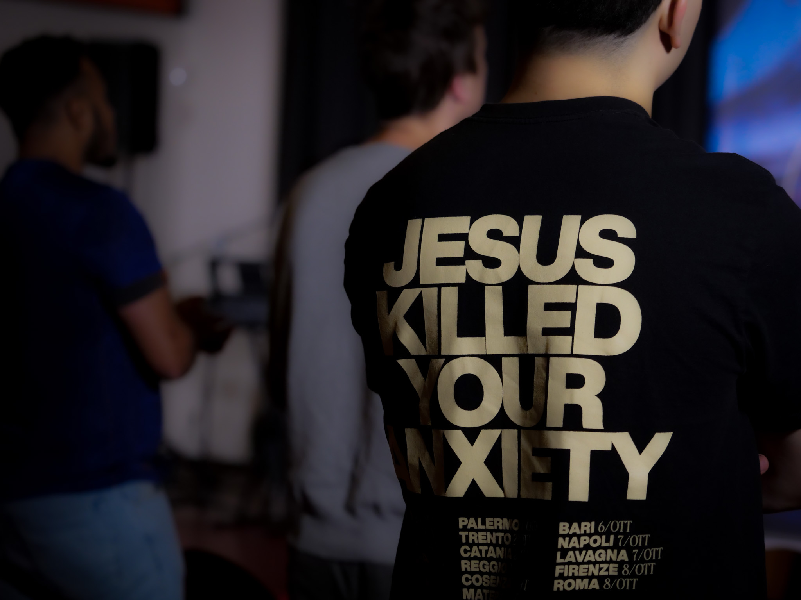

Demonstratiefoto
De medische neussonde als mode-item: mooi én ongemakkelijk tegelijk.
Beelden die vragen oproepen in plaats van antwoorden geven.
Fotografie is een van mijn grootste passies. Ik heb niet altijd een dure camera nodig om een goed beeld te maken.
Voor mij draait het om het verhaal achter de foto. In mijn fotografie zoek ik naar beelden die iets losmaken bij de kijker:
geen perfecte plaatjes, maar foto’s die je laten twijfelen, prikkelen of je afvragen of je je er eigenlijk wel prettig bij voelt.
Ik heb jarenlang actief fotografie beoefend en daardoor veel ervaring opgedaan in het maken en beoordelen van beelden. Inmiddels deel ik die kennis ook met anderen binnen de community.
De medische neussonde als mode-item: mooi én ongemakkelijk tegelijk.

Breekt technologie creativiteit af, of vormt het die opnieuw?

Een krachtig beeld van vertrouwen en toewijding.